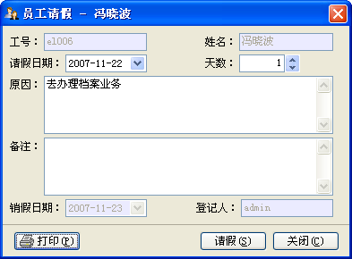
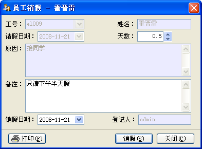

| 人事变动 - 请假、销假 |
|
您可以对在职员工进行请假、销假操作，其菜单为[人事变动]->[请假]、[销假]或员工信息右键菜单的[异动]->[请假]、[销假]，请注意它们的操作是互斥的，界面如下图所示：  在执行过员工请假操作时，请假天数不能为0，且请假原因是必须的。 您在写完请假信息后可以打印请假条。请假后，员工头象以请假信息表示，且其不能再请假，只进进行销假操作。 销假窗体如下图示：  您也可以在[人事变动]->[变动查询]->[请假查询]中对请假信息进行编辑、销假及删除等操作。 |